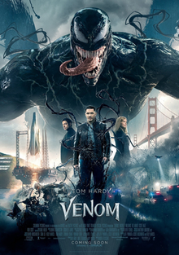
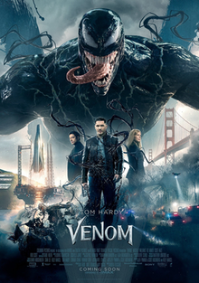

my 5 top movies


 


Avengers
After the devastating events of Avengers: Infinity War (2018), the universe is in ruins due to the efforts of the Mad Titan, Thanos.
With the help of remaining allies, the Avengers must assemble once more in order to undo Thanos's actions and undo the chaos to the universe,
no matter what consequences may be in store, and no matter who they face...
reference
How to Train Your Dragon
Long ago up North on the Island of Berk, the young Viking, Hiccup, wants to join his town's fight against the dragons that continually raid their town.
However, his macho father and village leader, Stoik the Vast, will not allow his small, clumsy, but inventive son to do so.
Regardless, Hiccup ventures out into battle and downs a mysterious Night Fury dragon with his invention, but can't bring himself to kill it.
Instead, Hiccup and the dragon, whom he dubs Toothless, begin a friendship that would open up both their worlds as the observant boy learns that his people have misjudged the species.
But even as the two each take flight in their own way, they find that they must fight the destructive ignorance plaguing their world.
reference
Frozen
Fearless optimist Anna teams up with rugged mountain man Kristoff and his loyal reindeer Sven and sets off on an epic journey to find her sister Elsa,
whose icy powers have trapped the kingdom of Arendelle in eternal winter. Encountering Everest-like conditions, mystical trolls and a hilarious snowman named Olaf,
Anna and Kristoff battle the elements in a race to save the kingdom. From the outside Elsa looks poised, regal and reserved, but in reality she lives in fear as she wrestles with a mighty secret: she was born with the power to create ice and snow.
It's a beautiful ability, but also extremely dangerous. Haunted by the moment her magic nearly killed her younger sister Anna, Elsa has isolated herself, spending every waking minute trying to suppress her growing powers. Her mounting emotions trigger the magic,
accidentally setting off an eternal winter that she can't stop. She fears she's becoming a monster and that no one, not even her sister, can help her.
reference
Venom
After a faulty interview with the Life Foundation ruins his career, former reporter Eddie Brock's life is in pieces.
Six months later, he comes across the Life Foundation again, and he comes into contact with an alien symbiote and becomes Venom, a parasitic antihero.
reference
Jumanji
In a brand-new Jumanji adventure, four high-school kids discover an old video-game console and are drawn into the game's jungle setting, literally becoming the adult avatars they chose.
What they discover is that you don't just play Jumanji--you must survive it. To beat the game and return to the real world, they must go on the most dangerous adventure of their lives,
discover what Alan Parrish left 20 years ago, and change the way they think about themselves --or they'll be stuck in the game forever, to be played by others without break.
reference